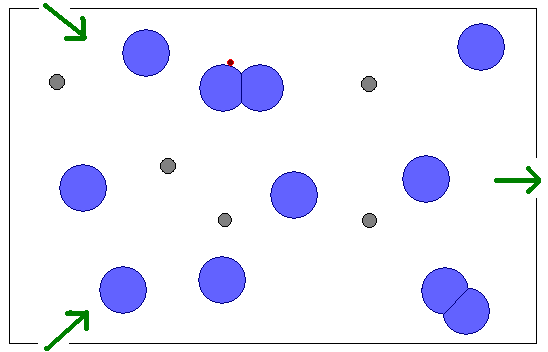

Bubbles
I should be writing a lecture on ethics and professional responsibility for CSC301, or catching up on book reviews, or plowing through some of the 80+ papers that have piled up on my desk. But it’s New Year’s Day, and my family is napping, so what better time to dream about what I’d do if I had some spare cycles? Why not spend some time doodling and musing about the video game I’d write if I was young and reckless and could stand to listen to the thumpa-thumpa noise kids call “music” these days.
So: the aim of the game is to get your bug from one end of the map to the other. The bug (shown in red below) rides on the surface of bubbles, which drift in the current:

The green arrows show where bubbles (shown in blue) and current enter and exit the map cell; the gray circles are fixed obstacles. Bubbles bounce off each other, and off obstacles, deforming as they do so. Your bug can only move from one bubble to another during collision; to do so, it simply crawls along the surface. Oh, but you have to be careful: if your bug is caught between two bubbles, or between a bubble and an obstacle, it’s crushed.
Those basic mechanics can be enhanced in a lot of ways:
- Your bug can kick its wee feet to push the bubble it's currently riding on in a particular direction. It won't have much effect (it's just a wee bug, after all), but it's enough to change the angle of attack for collisions.
- There are Other Things crawling around on the bubbles as well that will eat your bug if they can catch it.
- You have two bugs, each controlled by a different hand. I think this makes the game several times more difficult and interesting.
- Two-player version: you have two bugs, and so does your opponent. If you can trap one of her bugs between yours on the surface of a bubble, it's crushed, and you win.
McGugan’s Beginning Game Development With Python and PyGame is sitting on my shelf, whispering to me. I… must… be… strong…